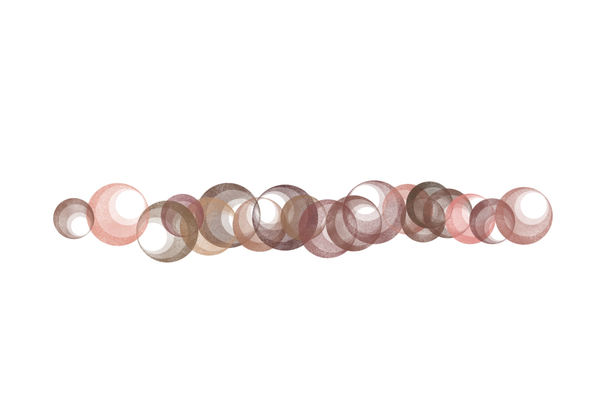

Trauma-Informed Care and Healing-Centered Engagement offer transformative frameworks for reimagining education, particularly for educators committed to fostering social justice and advancing antiracist practices. I like to say that trauma-informed is something you should know, and healing-centered is something you should do, but both are what you should be.

For information about Trauma and Healing, including resources that can guide your everyday schooling practices, click their respective circles. Remember: you are at the heart of this work. Click the center to learn more about how you can focus on your healing journey.